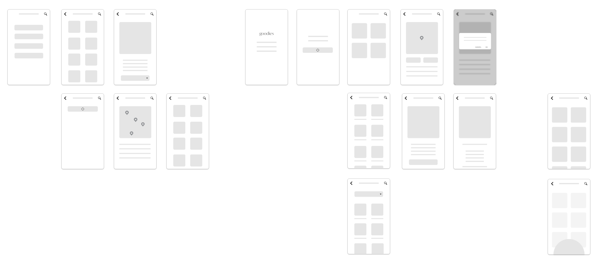

How might we design an app that nudges users to live more sustainably?

OVERVIEW
Climate change is accelerating and more and more people want to contribute a sustainable lifestyle. Other than switching to a plant-based diet, reducing food miles of the products we consume also lowers individual carbon footprint. Goodies app was a concept developed in the course of Prototyping Techniques at University of Miami, which assists users to discover locally sourced, seasonal foods based on their location.
DESIGN PROCESS

ROLE
Research
Wireframe
User testing
Visual design
High-fidelity prototype
TIMELINE
3 Week Sprint
Sep 2019
TECHNOLOGY
Figma
DESIGN & ITERATE
This concept was tested with selected users after going through couple rounds of design critique with fellow designers and the instructor. It was reiterated rapidly with wireframes and had helped me prioritize design ideas and identify problems with the usability in UI structures.
For example, in the previous version, the system does not require users to input their location right away. It was only prompted after they click into the produce page, then it would display the nearby farmer's markets. I prioritized the feature after watching several users struggled to locate the markets. However, I also kept the option to search within the produce page because some users liked being able to explore whether a kind of fruit is seasonal / local in other places.
KEY FEATURES
- Users are able to locate nearby farmer's market using geolocation.
- Users are able to search for a specific fruit, vegetable or a local farmer's market.
- A seasonal calendar dispalying whatever is in season based on the user's location.
- A detailed produce info and tips on nutritional benefits, how to choose and store and the seasonality of the produce.
INTERACTIVE PROTOTYPE
OPTIMIZATION OPPORTUNITIES
- A rating / review system to keep users informed of the vendors.
- A bookmark / favorite feature for users to keep tabs of the produce they love.
- A discussion forum for users to exchange recipes using seasonal produce.